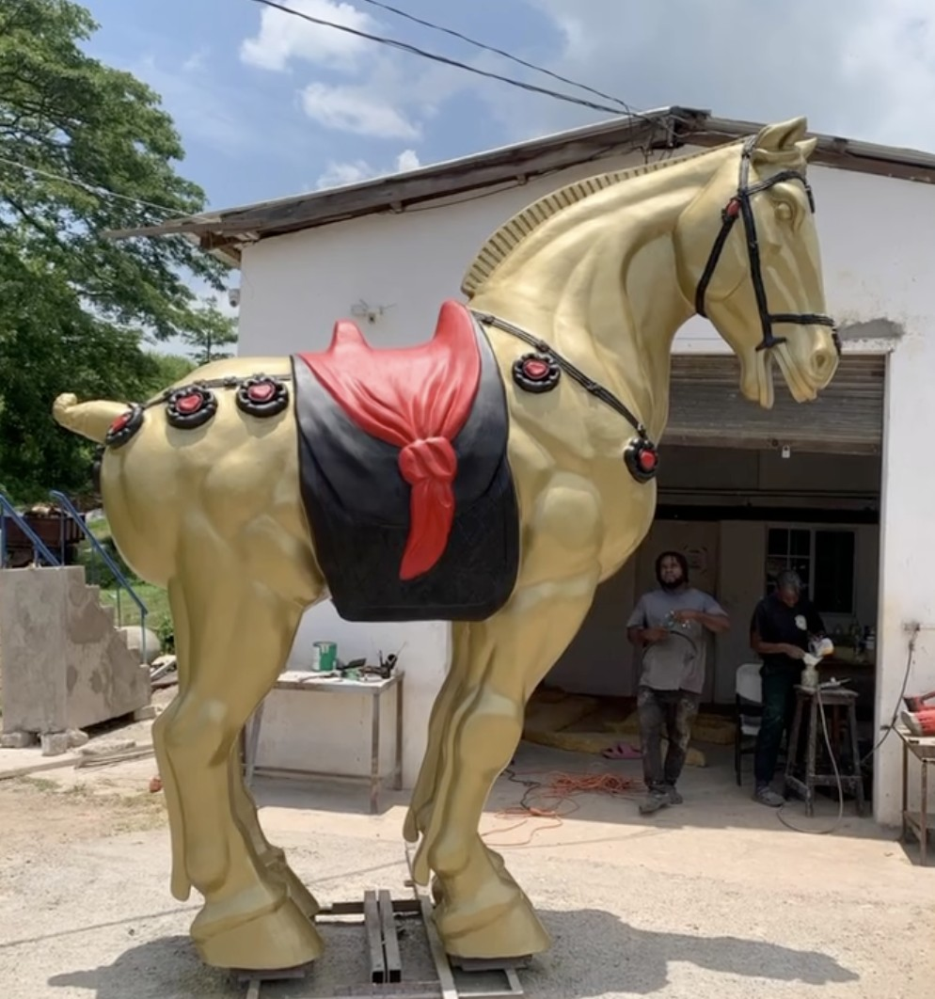

USA
12-foot Horse — P.F. Chang’s
Signature horse sculpture · 12 feet high × 12 feet long

The project
A signature horse.
At monumental scale.
Created in Jamaica for P.F. Chang’s, this signature stylized horse measures 12 feet high and 12 feet long. Led by sculptor Scheed Cole, the commission marked the studio’s first major international project.
Behind the work
A recognisable form at twelve feet
Created in Jamaica, the horse measures twelve feet high and twelve feet long. It translates the restaurant chain’s signature horse into a monumental sculptural object, bringing an animal form into the scale of an entrance landmark.
The route to the commission
The February 2024 Gleaner profile in Cole’s dossier reports that his work attracted the attention of Jamaica Fibreglass Products, leading to the P.F. Chang’s commission. It documents a connection between the studio’s Jamaican practice and an international commercial project.
Part of a wider sculptural practice
The same profile places the horse alongside Cole’s portraits, museum environments and monumental installations. Across those different types of work, he describes an interest in projects that demand difficult problem-solving and a high standard of finish.
Based on Janet Silvera’s “Sculptor Scheed Cole transforms lives beyond art with 360 Applied Design”, The Gleaner, 3 February 2024, reproduced in the artist’s dossier.